<!DOCTYPE html>
<html lang="en">
<head>
    <meta charset="UTF-8">
    <meta http-equiv="X-UA-Compatible" content="IE=edge">
    <meta name="viewport" content="width=device-width, initial-scale=1.0">
    <title>M4G-802-EU</title>
</head>
<body style="font-size: 20px;">
   <h2>Hướng dẫn sử dụng thiết bị M4G-802-EU</h2>
    <h4>1. Bước 1: Lắp Anten</h4>
    <p>1.1 Để thử nghiệm kết nối <b>LTE 4G</b>, Lắp 2x anten màu đen (kèm theo thiết bị) như hình bên dưới:
<br>
<i>Trước khi lắp:</i>  Dùng 2x đầu chuyển đổi để lắp Anten màu đen tương ứng: <br>
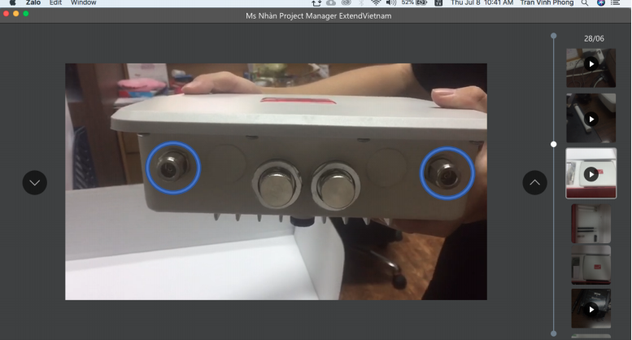  <br>
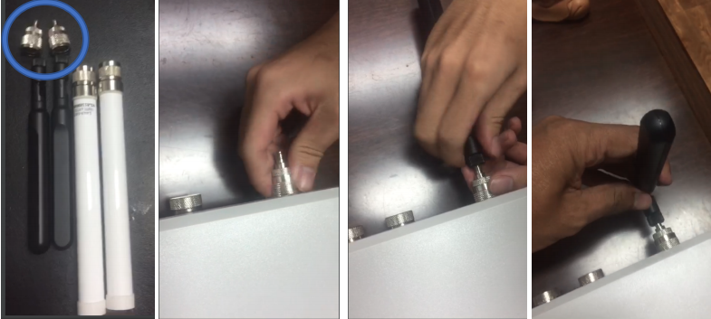  <br>
<i>Sau khi lắp xong:</i> <br>
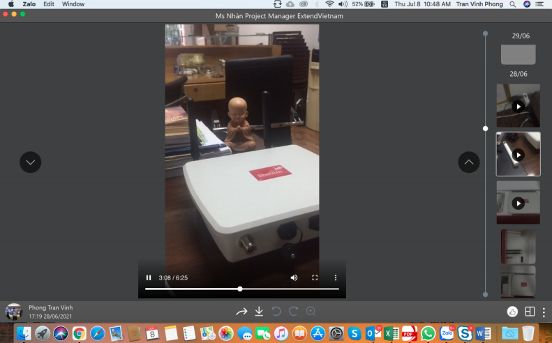  <br>
1.2 Để thử nghiệm kết nối <b>WiFi và 802.15.4</b> , Lắp 2x anten màu trắng (kèm theo thiết bị) như hình 
bên dưới: <br>
<i>Trước khi lắp:</i>  Dùng 2x Anten màu trắng <br>
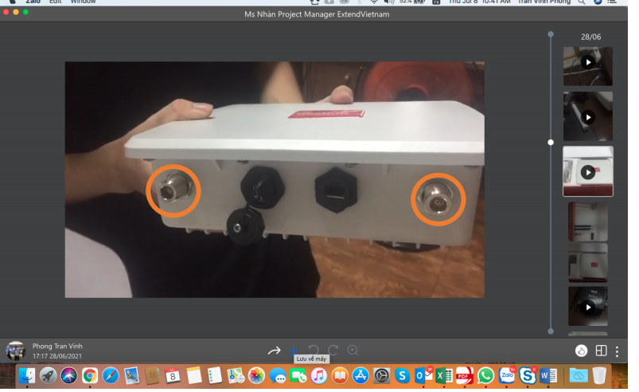  <br>
<i>Sau khi lắp xong:</i> <br>
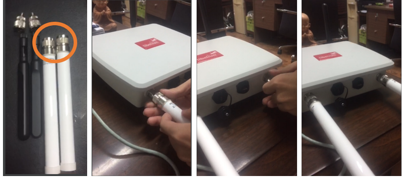  <br>
</p>
    <h4>2. Bước 2: Lắp sim 4G-Data:</h4>
    <p>
        Để kết nối Internet cho thiết bị, có 2 cách. Hoặc dùng Ethernet cáp kết nối với mạng LAN (DHCP 
cấp địa chỉ IP và Gateway đi Internet sẵn sàng) hoặc dùng SIM Card 4G có kích hoạt sẵn gói Data đi 
Internet của NCC dịch vụ di động. <br>
Trong trường hợp này là dùng SIM CARD thì cần gắn thiết bị với 1x SIM 4G-Data đã được kích hoạt 
sẵn gói dữ liệu. Ví dụ: có thể dùng Sim của Viettel/Vinaphone hoặc Mobiphone đều được. (Thiết bị đã được thử kết nối thành công với Sim 4G-Data của Viettel). 
<br>
Cách lắp Sim theo hình bên dưới. Tại khe cắm Sim có tích hợp chung với đầu cắm USB theo tiêu 
chuẩn: <br>
- nano-SIM card <br>
- micro-USB (type B) <br>
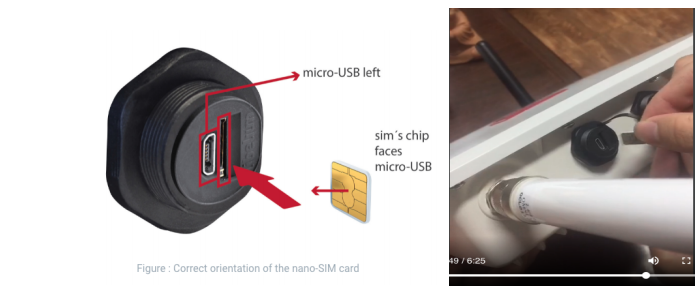  <br>
    </p>

<h4>3. Bước 3: Cấp nguồn:</h4>
<p>
    Thiết bị được thiết kế cấp nguồn qua cổng PoE. Để cấp nguồn, cần chuẩn bị các phụ kiện (kèm theo) 
gồm: <br>
- 1x cục PoE splitter (có 2x cổng: PoE và LAN) <br>
- 1x cục nguồn DC-12V Adapter (chuyển đổi từ 220V AC sang 12V DC) <br>
- 1x dây mạng Ethernet (2 đầu RF-45) <br>
Và bắt đầu lắp theo hình sau: <br>
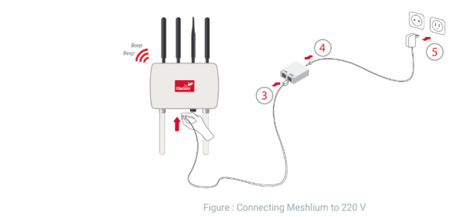  <br>
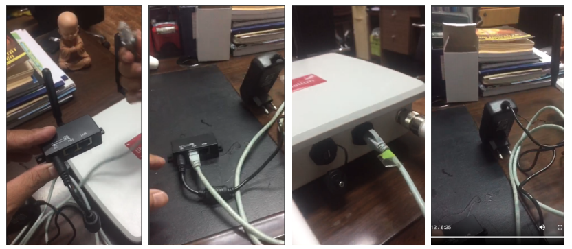  <br>
Sau khi cắm Adapter vào nguồn 220V, thiết bị sẽ được khởi động cho đến khi nghe tiếng “Beep” 
phát ra từ thiết bị (thời gian để khởi động < 3-5phút)! Hoặc khi xuất hiện SSID của giao tiếp WiFi 
2.4Ghz có tên “meshliumb3e8”(trong trường hợp đã gắn sẵn Anten cho WiFI). <br>
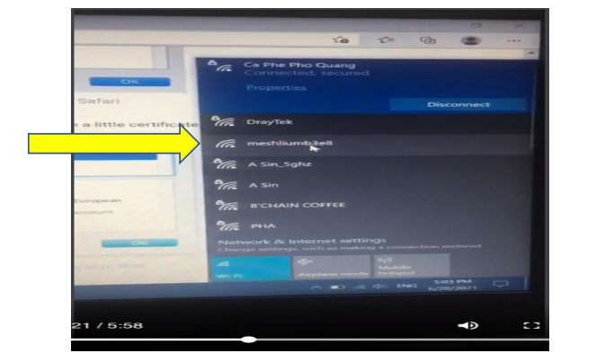  <br>
</p>
<h4>4. Bước 4: Đăng nhập thiết bị</h4>
<p>
    Sử dụng thiết bị đăng nhập (ví dụ: dùng máy tính PC) theo các bước sau:
- Bật kết nối WiFi trên PC <br>
- Kết nối đến SSID “meshliumb3e8” (mặc định không có mã đăng nhập) <br>
- Trên trình duyệt Internet (web browser), mở đến địa chỉ sau: <br>
<a href="https://10.10.10.1/ManagerSystem">https://10.10.10.1/ManagerSystem </a>
(cho phép cấu hình certificate đến kết nối này, xem chi tiết 
tại link hướng dẫn cho trình duyệt được lựa chọn: <br>
<a href="https://development.libelium.com/meshlium-technical-guide/accessing#configure-your-browser-to-trust-the-meshlium-manager-systems-self-signed-certificate">
    https://development.libelium.com/meshlium-technical-guide/accessing#configure-yourbrowser-to-trust-the-meshlium-manager-systems-self-signed-certificate)
</a>
<br>
- Sau đó, màn hình đăng nhập sẽ xuất hiện với thông tin người dùng (User/Password: 
admin/libelium) <br>
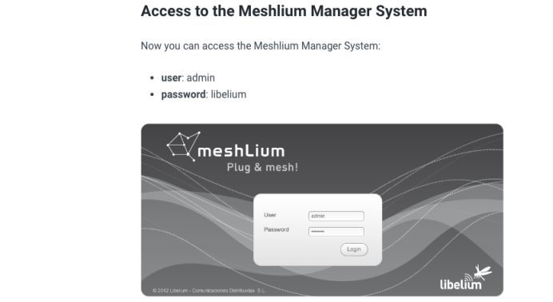  <br>
- Màn hình sau khi đăng nhập sẽ là: <br>
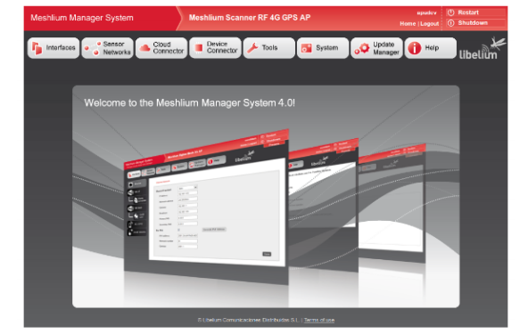  <br>
- Đến bước này, tuỳ theo yêu cầu thử nghiệm, và ứng dụng cụ thể của thiết bị mà người quản trị
thiết bị có thể cấu hình kết nối Internet qua SIM CARD 4G (hay qua giao tiếp bằng cáp ethernet). 
Với các giao tiếp WiFi và 802.15.4 đã được cấu hình mặc định để có thể kết nối và truyền nhận 
dữ liệu với các thiết bị gắn cảm biến theo yêu cầu của ứng dụng cụ thể.
</p>
</body>
</html>